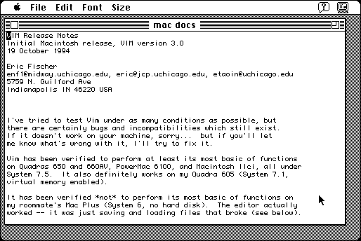

Download
vim.zip (590K) Vim 3.0 repackaged into a zipped hfs disk image and checksum file. The disk image can be mounted with Mini vMac.
vim.sea.hqx (745K) Vim 3.0 in the original format.
copyright: Bram Moolenaar, port by Eric Fischer
mod date: Oct 19, 1994
license: public domain
last known url
(gone)
but main Vim site still exists
Macintosh port of a popular unix editor, not very Mac like. requires system 7.

If you find these downloads useful, please consider helping the Gryphel Project, which hosts them.
Here are the md5 checksums for the downloads, signed with Gryphel Key 5:
--------- GRY SIGNED TEXT --------- 88d7915a04a0b4423ff1b64dc228469b vim.zip 779487f9d050620267bd2fa7730d1972 vim.sea.hqx ------- BEGIN GRY SIGNATURE ------- Gry/4Xa8CFcUzxdN/F10Nu6NL2m6stn39uD2pN1i864rqO1+hZ4hGskdgXr2jrcj y0ejFfbQ6vFsWco940Ol0ehZCT50JT/JRR8Pf7nyYhTL1EVa1YkEc+HvfGyFq2Wi 5hQFmmSVzjBm1dHkkuthscBvsGcB59oO+/H67UbfhK3BEvlpkxjVvYbfU2dPcvNX -------- END GRY SIGNATURE --------